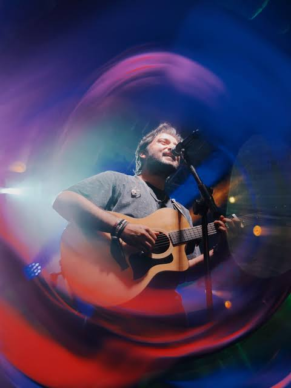

Search
Search

About Artist
Bayaan and Sherazam are Pakistani musicians known for their 2024 collaborative single "Safar" ,
released as part of Bayaan's album of the same name. The track was composed by Bayaan and
Sherazam, with lyrics written by Asfar Hussain and music produced by Farhan Zameer, released
under Sony Music Middle East.
It came out in late 2024 and gained significant popularity online.
Thematically, the song captures the essence of life's journey, opening with reflections on
loneliness and the relentless pursuit of dreams.
The lyrics highlight the struggle of walking
uncharted paths, describing a life on drifting boats where dreams become firm intentions, with
imagery of old photographs and city breezes adding emotional depth . Ultimately, the song's
message celebrates the idea that the journey itself is the destination, encouraging listeners to
stay strong and keep moving forward.
Bayaan is an established Pakistani band with multiple singles including "Kahan Jaoon" ,"Sapna," "Maand," and
often collaborating with artists like Hasan Raheem and Rovalio. The "Safar"
collaboration reflects the contemporary Pakistani pop and indie music scene's emotional, poetic
songwriting style, blending Urdu lyricism with modern production sensibilities !
